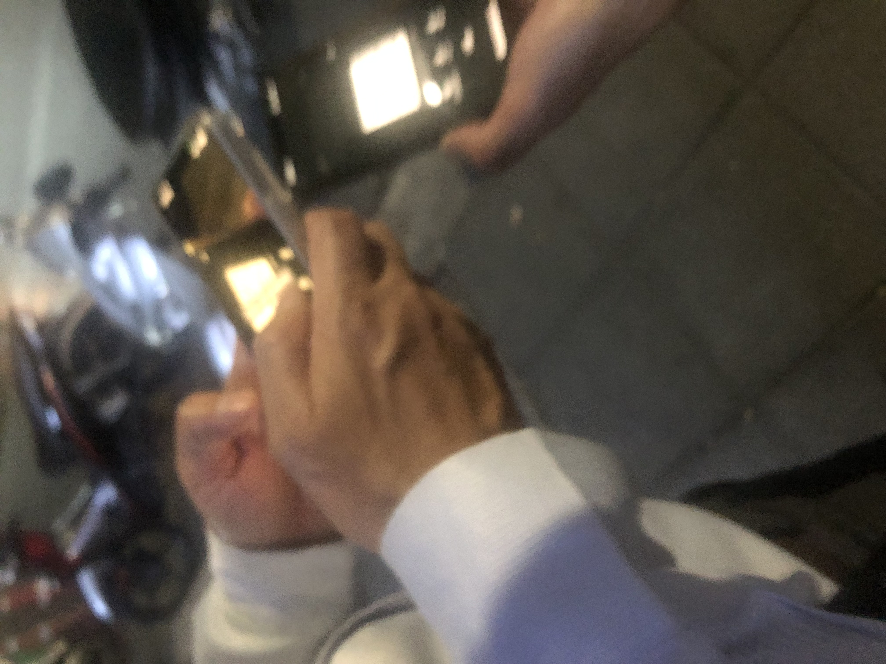

駐在員のお兄さん達のエネルギー
バンコクでとあるセミナーに参加して、二カ国以上の拠点を持つ人達とごはんを食べてきた。おにーさまがた、楽しかったです、ごちそうさまでした！
みんなが濃い背景を持っていて、お話に飽きが来なかった。（そのせいで、30分だけね！と言ったお兄様は1時間半くらい経って急いで出て行った。）
講義の内容からは、私が一匹目のドジョウ過ぎて、泥棒ほいほいである事の悔しさなんかを噛みしめていた。
セミナーもよかったのだけど、参加している人達の背景が楽しかった。お話ししたように、形になったらすぐにご案内を送りたいな！！！その時にもまたよろしくお願いします。優しい言葉をかけられて嬉しかった。また会いましょう!！
酔いがさめて落ち着いたテンションになってから。冷静な、というか、落ち着いたトーンの振り返りを追記したい。
私の地元はどこなの？という話とも絡んでくる。私の地元は、タイのバンコクにある日本人社会だ。そしてそれは、ふわふわしていて、人はすぐに入れ替わる。それから、かなり閉鎖的な社会で、新参者はちゃんとした紹介者がいないと仲間に入れない。わりと冷たい世界だ。そこにはちゃんとした事情があるのだけど。そこに所属しつつ色々な事を感じたり考えたりしているのが私の地元民、だということになる。だから、こっそり懐かしい想いにも私は浸っていた。
そんな風に喜んでいたら、冷水を浴びせられてしまったので、ちょっとだけ怒りながら、以下の事を考えた。

（画像は、大体みんなが帰った後に、（あ…これバレエスタジオだな…）ってなっていた時）
私はかなり、かーなーりー、学ぶのが好きだ。隣に人がいたら、気付かれずに割とすぐに先生にしてしまう。中身がスカスカのスポンジみたいに、そこら中から勉強しているので結構簡単に疲れてしまったりもする。深く見抜いていて、さりげなくしているのが好きだ。誰だってそうなんじゃないかと思うけど。私の両親は特別に他人の見えない人たちだったので、子供達は反対に超能力的に人をじっと見る人たちに育った。両親が人間について語っているのを聞くと、私なんかはまるで小学生がシルバニアファミリーで遊んでいるのを聞いている様な気がする。
当然の様にたぶん全員私のことをご存知で（もはやもうその点は光栄か）、ただ一人仄めかしに来た人以外は平静を装ってくれた。その正常な都会人らしい洗練が、過ごし易かった。愚かな父なんかは、私が誰かと簡単に打ち解けるのが嫌いだ。嫌いだというわがままが先にあって、いちゃもんを付けるために、誰もかれもを根っからのヴィランの様に言いたがる。実際には自分が他人を理解しないので他人に好かれない、仲良くなってもらえないのに娘はそうではないのが悔しいだけだ。彼が描写するヴィランも漫画みたいに単純な人格でげんなりする。ヴィランが見分けられない。自分が一番のヴィランである幻想の世界に暮らしている。
私を追い掛け回す、負のエネルギーから足を使っておさらばできる年代に至ったことが私は本当に嬉しい。自分にも人を見る目があって、その目が外にだけではなく、正確に家庭内をも見据えている現在が嬉しいと思っている。この世には星の数ほど人がいる。何故悪い人に使う時間があるだろう？
人はみんな生まれつきは必ずグレーだ。そこに優しさが花開く様に、幸せが花開く様に、みんなが努力した場合に、そこには美しい空間がほんの一瞬だけ維持される。みんな、幸せになりたいから、その時間を自分の周りに長く続かせようとして、深みのあるいい人間と知り合いたいし、色々な努力をする。この世はそういうところでもあると私は思っている。
 ← Back to Blog